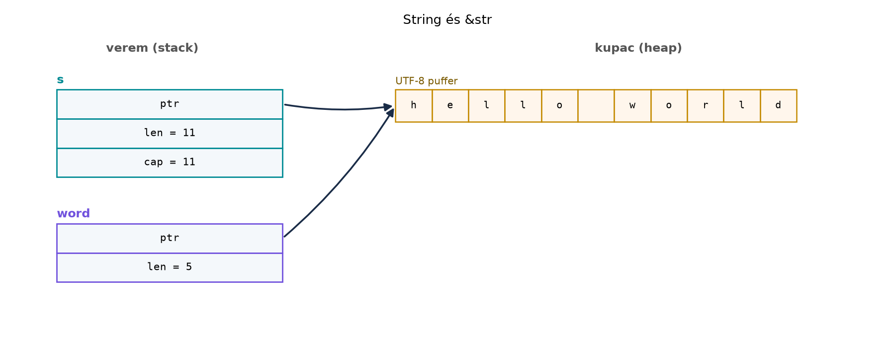

A C++-ban a std::string_view megjelenése óta
természetes, hogy string-függvények nem birtokló nézetet fogadnak, nem
teljes std::string másolatot. A
std::string_view azonban nem véd meg a dangling
pointertől: ha az a std::string, amelyre mutat,
kikerül a hatóköréből, a program viselkedése definiálatlan. Rustban a
&str ugyanezt a koncepcionális szerepet tölti be, de a
Élettartam-annotációk és az elision szabályai
alfejezetben tanult lifetime-rendszerrel a fordító fordítási időben
kizárja, hogy a nézet túlélje a birtokolt puffert. Ebben az alfejezetben
a slice-ok, a String/&str páros és az
UTF-8 kezelés C++-os megfelelőit járjuk körbe.
Definíció (slice). A &[T] típusú
slice fat pointer: egy adatmutató és egy hossz. Nem tulajdonos,
nem allokál; csak egy meglévő, egybefüggő [T] tömbre mutat.
A &mut [T] mutálható nézet, de a hossza ekkor is
rögzített.
Definíció (&str). A
&str string slice: egy UTF-8 kódolású bájtsorozatra
mutató fat pointer (mutató + bájthossz). Garantáltan érvényes UTF-8, és
nem tulajdonos. A &str nem null-végű – a hosszt a fat
pointer tárolja.
Definíció (String). A
String birtokolt, heap-en tárolt, UTF-8 kódolású
szövegpuffer. A Vec<u8>-hoz hasonlóan három szóból
álló tulajdonos: mutató, hossz, kapacitás. A String
tulajdonosa a puffernek, és a Drop implementáció
felszabadítja.
Szabály (paramétertípus-választás).
Függvényparaméterben szöveget &str-ként, bájtpuffert
pedig &[T]-ként fogadjunk, ha a függvény nem módosítja
és nem tárolja el a hivatkozást. A String vagy
Vec<T> paraméter arra való, ha a függvény birtokba
veszi az értéket (és el is tárolja, esetleg módosítja).
Továbbvitt eredmény. Ezt a paramétertípus-választási döntést a API-tervezés Rustban: irányelvek és ergonómia alfejezetben általános API-elvként, a C ABI: extern “C”, repr(C), bindgen és cbindgen alfejezetben pedig az FFI-határokra alkalmazva visszük tovább.
Szabály (deref coercion). Ahol &str
várt, &String is átadható, mert a String
automatikusan kölcsönözhető &str-ként. A részletes
mechanizmust (a Deref traitet) a A
standard trait-ek: konverziók, formázás, Default, Deref, Borrow
alfejezet tárgyalja; itt annyit jegyzünk meg, hogy a paraméter típusa
legyen &str, és a hívás &my_string-gel
is működik.
Szabály (UTF-8 indexelés). A String és
a &str nem indexelhető [] operátorral,
mert a s[i] bájtot adna, nem karaktert; egy karakter több
bájt is lehet. A s[i..j] szeletelés pánikolhat, ha a
határok nem karakterhatárok. Használjunk .chars(),
.bytes(), .char_indices() vagy
.get() metódusokat.
C++-ban a std::string_view a nem birtokló nézet; a
programozó felelőssége, hogy ne lógjon a levegőben:
#include <string>
#include <string_view>
#include <iostream>
std::string_view first_word(std::string_view s) {
auto pos = s.find(' ');
return pos == std::string_view::npos ? s : s.substr(0, pos);
}
int main() {
std::string text = "hello world";
std::string_view word = first_word(text);
std::cout << word << '\n'; // hello
// Ha text kikerül a hatókörből, a word dangling lesz.
}A Rust-megfelelő ugyanazt a nem birtokló nézetet használja, de az élettartamot a fordító ellenőrzi:
fn first_word(s: &str) -> &str {
match s.find(' ') {
Some(pos) => &s[..pos],
None => s,
}
}
fn main() {
let text = String::from("hello world");
let word = first_word(&text);
println!("{word}"); // hello
// A borrow checker garantálja, hogy word nem éli túl textet.
}A különbség: a C++ kódban a string_view élettartama a
programozón múlik; a Rust kódban a &str visszatérési
típusához az elision szabályok alapján a bemenő &str
élettartama kötődik, így a hívó String nem mozdulhat el,
amíg a word él. A &s[..pos] kifejezés
pedig slice-ot készít: ugyanarra a pufferre mutató fat
pointert, nem másolatot.
A String és a &str viszonyát a
memóriában az alábbi ábra szemlélteti:

A word ugyanarra a kupacpufferre mutat, mint a
s, de a hossza csak 5, tehát a "hello"
előtagot látja. A kupacpuffer adatai nem másolódnak; a
String és a &str is ugyanazt a memóriát
használja.
Munkakönyvtár:
~/rust-labor/r018-slices.
Hozzuk létre az önálló kísérleti crate-et:
cargo new r018-slices
cd r018-slicesA src/main.rs tartalma:
fn first_word(s: &str) -> &str {
match s.find(' ') {
Some(pos) => &s[..pos],
None => s,
}
}
fn print_chars(s: &str) {
println!("String: {s:?}, byte hossz: {}", s.len());
for (byte_idx, ch) in s.char_indices() {
println!(" byte {byte_idx}: {ch:?}");
}
}
fn main() {
let text = String::from("hello world");
let word = first_word(&text);
println!("first word: {word}");
let s = String::from("árvíz");
print_chars(&s);
match s.get(0..2) {
Some(sub) => println!("0..2 mint str: {sub}"),
None => println!("0..2 nem karakterhatár"),
}
}Futtatás:
cargo runVárt kimenet:
first word: hello
String: "árvíz", byte hossz: 7
byte 0: 'á'
byte 2: 'r'
byte 3: 'v'
byte 4: 'í'
byte 6: 'z'
0..2 nem karakterhatárMagyarázat: az árvíz string hossza 7 bájt, de 5
karakter. A s.get(0..2) None-t ad, mert az
"á" két bájt, és a 2. bájt a karakter közepén van. A
s[0..2] ehelyett pánikolna; a get változat
biztonságos. A char_indices() bájt-indexeket ad vissza
karakterenként, így láthatjuk, hogy a karakterek nem egyenlő
szélességűek.
A &str nem az egyetlen nem birtokló szövegnézet. A
Rust standard könyvtára a következő típusokat kínálja, amikor a
String/&str nem megfelelő:
OsStr/OsString:
platformfüggetlen, nem feltétlenül UTF-8 szövegnézet. Unixon
tetszőleges bájt, Windowson WTF-8 vagy UTF-16. Fájlnevekhez és
környezeti változókhoz használjuk, mert a fájlrendszer nem garantál
UTF-8-at.Path/PathBuf:
OsStr-ön alapuló elérésiút-típusok. A Path a
nem birtokló, a PathBuf a birtokolt változat.CStr/CString: null-végű,
C ABI-kompatibilis szövegnézet, a C const char*-nak és a
char*-nak felel meg. A C ABI: extern
“C”, repr(C), bindgen és cbindgen alfejezet foglalkozik vele
részletesen.C++-os megfelelőik: std::filesystem::path ↔︎
PathBuf/Path, const char* ↔︎
&CStr, std::string ↔︎ String.
A választási szempont mindig az: ha a szöveg UTF-8 és a funkció nem
igényel C ABI-t, használjunk
String-et/&str-t; fájlrendszer-műveletnél
Path-ot; C-FFI-nál
CStr/CString-et.
A std::borrow::Cow<'a, str> a
clone-on-write típus. Akkor hasznos, ha egy függvény néha
birtokolt String-et, néha kölcsönzött
&str-t akar visszaadni anélkül, hogy mindig
allokálna:
use std::borrow::Cow;
fn maybe_trim(s: &str) -> Cow<'_, str> {
if s.starts_with(' ') {
Cow::Owned(s.trim_start().to_string())
} else {
Cow::Borrowed(s)
}
}Ha nincs elvégzendő munka, a függvény allokáció nélkül adja vissza a bemenetet; ha módosítani kell, akkor allokál. Ezt a Teljesítmény: mérés, profilozás, allokáció, release-beállítások alfejezetben visszük tovább.
Továbbvitt eredmény. A
Cow<'a, str> típus használata a Teljesítmény: mérés, profilozás, allokáció,
release-beállítások alfejezetben jelenik meg újra, ahol az allokáció
elkerülését mérjük és hangoljuk.
&String
paraméter használata &str helyettfn bad(s: &String) {
println!("{s}");
}
fn good(s: &str) {
println!("{s}");
}
fn main() {
let s = String::from("hello");
bad(&s); // működik, mert &String
// bad("hello"); // NEM fordul: &str nem &String
good(&s); // működik, deref coercion
good("hello"); // működik
}A bad függvényt nem lehet &str-rel
hívni; ezért a paraméter szinte mindig &str, hacsak a
függvény kifejezetten &String-et vár (például mert a
kapacitást is vizsgálja, ami ritka).
let s = String::from("árvíz");
let sub = &s[0..2]; // pánikol: byte index 2 is not a char boundaryEz a kód lefordul, de futás közben pánikol, mert a 2. bájt az
"á" karakter közepén van. A pontos üzenet verziófüggő, de a
lényeg mindig a karakterhatár-sértés. Javítás: használjunk
get-et és Option-t, vagy karakter-alapú
iterátorokat.
clone() a
borrow checker „legyőzésére”fn takes_string(s: String) {
println!("{s}");
}
fn main() {
let text = String::from("hello");
takes_string(text.clone()); // felesleges allokáció
// Helyesebb: fn takes_str(s: &str) és takes_str(&text)
}A clone() megkerüli a borrow checkert, de felesleges
allokációt és másolást végez. A helyes megoldás a kölcsönzés
(&str), ha a függvény nem veszi birtokba az
értéket.
Melyik függvényparaméter a jobb, és miért:
fn f(s: &String) vagy fn f(s: &str)?
Mi a különbség hívásnál?
Fordítsd le a következő C++ kódot idiomatikus Rustra. A
std::span<const int> a nem birtokló nézet, amely a
Rust &[i32] slice-nak felel meg:
#include <span>
#include <iostream>
void print_first(std::span<const int> xs) {
if (!xs.empty()) {
std::cout << xs[0] << '\n';
}
}Írj egy
parse_command(line: &str) -> Option<(&str, &str)>
függvényt, amely a szöveges protokoll sorait elemzi: ha a sor
"GET kulcs" vagy "SET kulcs érték" alakú, adja
vissza a parancsot és a maradékot; egyébként None. A
visszatérési típus &str legyen, ne String,
és használj split_once-t. (Ezt a paramétertípus-választást
visszük tovább a API-tervezés Rustban: irányelvek és
ergonómia és a C ABI: extern “C”, repr(C),
bindgen és cbindgen alfejezetben.)
Az alábbi függvény pánikolhat egyes bemenetekre. Adj meg egy ilyen
bemenetet, és javítsd a függvényt úgy, hogy
Option<&str>-t adjon vissza, és ne
pánikoljon:
fn first_three_chars(s: &str) -> &str {
&s[0..3] // hibás: byte, nem karakter
}Az &str a jobb választás, mert a
&String-et csak &String-gel lehet
hívni, míg az &str-t &String és
&str értékkel is (deref coercion révén). Ha a
függvénynek nincs szüksége a tulajdonjogra, &str-t
fogadjon.
fn print_first(xs: &[i32]) {
if let Some(x) = xs.first() {
println!("{x}");
}
}
fn main() {
let v = vec![1, 2, 3];
print_first(&v);
}A &v &Vec<i32>-ből
&[i32]-re deref coercion történik. A C++
std::span<const int> a &[i32]-nek
felel meg; az ürességvizsgálat Rustban a first()
Option-jával történik.
fn parse_command(line: &str) -> Option<(&str, &str)> {
match line.split_once(' ') {
Some((cmd, rest)) if cmd == "GET" || cmd == "SET" => Some((cmd, rest)),
_ => None,
}
}A split_once &str-eket ad vissza, nem
allokál. A valódi protokoll elemzésénél a DEL és
LIST parancsokat is kezelni kell, de ez a gyakorlat a
&str alapú elemzés mintáját mutatja.
Pánikoló bemenet például "éé" (két darab 2 bájtos
karakter, hossz 4 bájt), ahol a 3. bájt a második karakter közepén van,
így &s[0..3] pánikol.
Javítás:
fn first_three_chars(s: &str) -> Option<&str> {
let end = s.char_indices()
.nth(3)
.map(|(i, _)| i)
.unwrap_or(s.len());
s.get(0..end)
}A char_indices().nth(3) megadja a negyedik karakter
kezdő bájtindexét, ha létezik; ha nincs, a teljes stringet adjuk vissza.
Az s.get(0..end) pedig biztonságosan ellenőrzi a
karakterhatárt.
A &[T] és a &str fat
pointer: adatmutató és hossz, nem tulajdonos nézet. A
String birtokolt, heap-en tárolt UTF-8 puffer, a
Vec<u8>-hoz hasonló tulajdonosi szereppel. A
függvényparaméterekben szöveget mindig &str-ként,
bájtsorozatot &[T]-ként fogadjunk, hacsak a függvény
nem szerzi meg a tulajdonjogot; ezt a döntést a API-tervezés Rustban: irányelvek és ergonómia és a
C ABI: extern “C”, repr(C), bindgen és cbindgen
alfejezet viszi tovább. A String nem indexelhető
bájtonként, mert a karakterek több bájtosak lehetnek; használjunk
chars(), bytes(), char_indices()
vagy get() metódusokat. A Cow<'a, str>
clone-on-write típus, amelyet a Teljesítmény: mérés,
profilozás, allokáció, release-beállítások alfejezetben vizsgálunk
tovább.
A slice-ok, a String/&str, a
char_indices, a split_once és a
Cow a Rust standard könyvtár stabil API-jának részei; a
hivatalos leírások a Rust Bookban és a std
dokumentációjában találhatók. A példákban szereplő pontos pánik- és
hibaüzenetek szövege verziófüggő; érdemes ellenőrizni a fejezet
készítésekor használt toolchainen. A cargo new és a
cargo run parancsok stabilak, a bemutatott kód a 2021-es és
2024-es edition szerint is lefordítható.